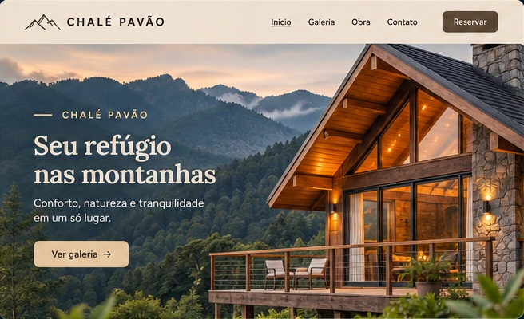
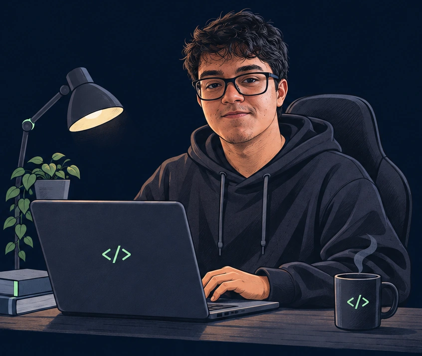
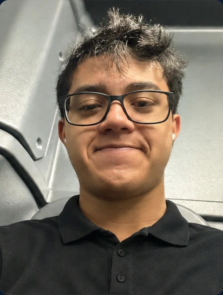
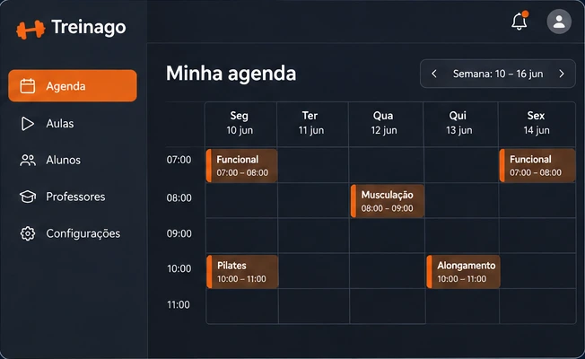

Chalé Pavão
Site de apresentação de um chalé nas montanhas, com galeria e evolução da obra.
Olá, eu sou o
Estudo Análise e Desenvolvimento de Sistemas e desenvolvo sites com HTML, CSS e JavaScript. Busco minha primeira oportunidade de estágio em tecnologia.

⌄Conheça meu trabalhoSou Vinícius, estudante do 2º semestre de Análise e Desenvolvimento de Sistemas. Meu interesse por programação começou no curso técnico integrado ao ensino médio, onde tive meus primeiros contatos com lógica e desenvolvimento de sistemas.
Desde então, venho aprofundando meus conhecimentos em HTML, CSS e JavaScript e colocando o aprendizado em prática na criação de sites e projetos próprios. Gosto de entender como as coisas funcionam e aprender enquanto construo.
Minha experiência como Jovem Aprendiz em Recursos Humanos também contribuiu para minha formação, desenvolvendo organização, atenção aos detalhes e trabalho em equipe.
Busco minha primeira oportunidade de estágio em TI, para contribuir com uma equipe, aprender com outros profissionais e continuar evoluindo como desenvolvedor.

Projetos que transformam aprendizado em prática.

Site de apresentação de um chalé nas montanhas, com galeria e evolução da obra.

Plataforma de agendamento de aulas para academias, professores e alunos.
Prévias ilustrativas dos projetos.
Experiências que fazem parte da minha trajetória.
JUL 2023 — SET 2024
Atualização de dados de colaboradores, organização e conferência de documentos e apoio às rotinas administrativas do setor.
AGO 2025 — JUN 2026
Atendimento a clientes, apresentação de produtos e venda de empréstimos consignados para aposentados e pensionistas.
PRÓXIMO PASSO
Procuro uma oportunidade de estágio para colocar meus conhecimentos em prática, aprender com a equipe e crescer como desenvolvedor.
Vamos conversar →— CONTATO
Estou em busca da minha primeira oportunidade em TI. Se você tem uma oportunidade de estágio ou quer conversar sobre um projeto, vamos nos conhecer.
✉ Me mande um olá